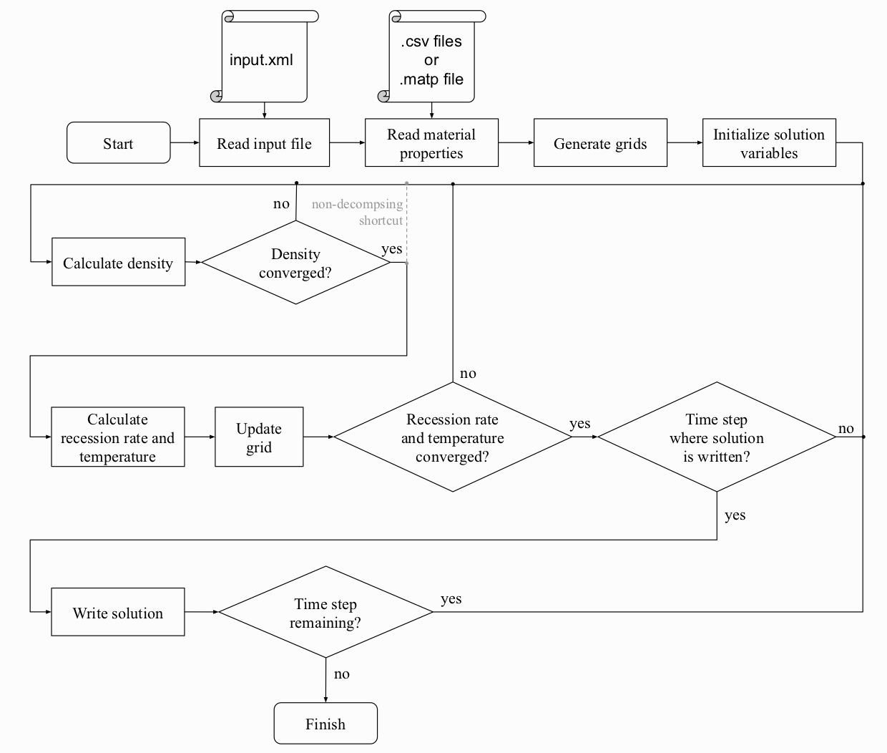

Introduction to code¶
The code is implemented in Python and uses an implicit Newton-Raphson scheme for solving the energy equation. To get an understanding of the general solution procedure that is implemented in hotstarship.hotstarship(args), see figure below.
The following descriptions shall focus on some of the main variables that are used which appear throughout the program. To get an undeerstanding of what happens in the code, it is recommended to start at hotstarship.hotstarship(args) and find the above procedure reflected in the code. A lot of this is related to reading the input file, reading material properties, constructing the grid, initializing variables, etc. The actual finite volume “magic” happens inside assembly.py that constructs all the derivatives and function values mentioned in the thesis.
The solution vectors are split up into several parts in order to be able to differentiate between
different material properties.
For solution of the energy equation, the vector of unknowns is Tnu.
For an ablative case, the first entry is the recession rate sdot. After that,
there is an entry for the temperature of each cell node. For an interface, there is an
additional temperature in-between. See the example below for an ablative case with three layers with 10, 16 and 53 cells
in each layer respectively.
The vector of unknown densities rhonu simply has all the nodal densities stored:
In order to get a relation between each layer or interface and the respective cells,
Tmap is used. This dictionary maps string keys to the respective locations in the Tnu array:
sdot -> [0]
lay0 -> [1, 2, ..., 10]
int0 -> [11]
lay1 -> [12, 13, ..., 27]
int1 -> [28]
lay2 -> [29, 30, ..., 81]
Similarly, rhomap looks like this for the used example:
lay0 -> [0, 1, ..., 9]
lay1 -> [10, 11, ..., 25]
lay2 -> [26, 27, ..., 78]
Thus obtaining temperatures in the last layer would be performed using
Tnu[Tmap["lay2"]]
The layers array contains information about the material and grid
of each layer. Thus, conductivity of the material in layer with index 1
at 400 K and virgin weight fraction of 0.3 can simply be accessed using:
layers[1].material.k(400, 0.3)
or the coordinate of the cell node with index 5:
layers[1].grid.zj[5]
For assembling the Jacobi matrix and function vector for Newton-Raphson scheme,
the keys of Tmap are used and looped over to add each part associated with it.
For internal cells (key starts with “lay”) these are conduction, internal energy,
pyrolysis gas convection and grid movement. For the interface (key starts with “int”),
this is the equality of conduction fluxes. For “sdot” many things have to be considered
in addition to the terms for internal cells such as radiation, input heat flux and ablation
product outflow.
The function vector is directly stored in fnu whereas the individual diagonals of the
Jacobian J are stored in separate arrays. The actual matrix is assembled at the very end,
as this a lot faster than creating a lot of matrices and adding them together.
Updating densities is a lot easier, as there is no connection between adjacent cells. Thus each cell can be updated individually. All it requires is solving the Arrhenius law, which itself depends on density. Thus an implicit scheme is used for solving the Arrhenius law, too. For decomposition, there is a minimum decomposition temperature under which some materials or material components do not decompose. Thus a smoothstep function that scales the decomposition rate between 0 and 1 in a short interval around that temperature is used for stability.
Iteration is done until the temperature solution has converged. If the user has specified to write a time step, this is performed with help of the output.SolutionWriter instance.